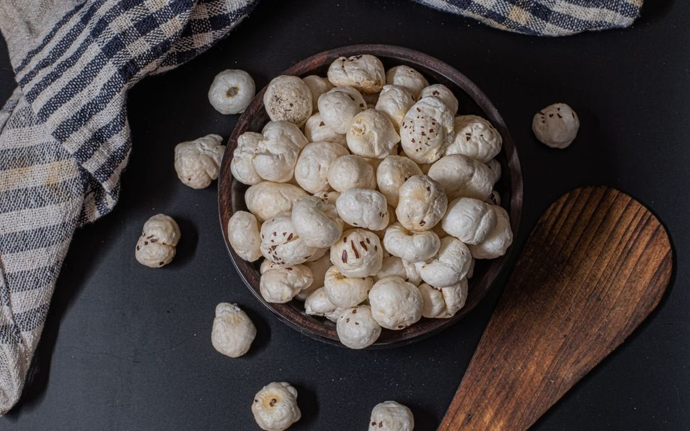

Makhana Guides
Makhana Benefits: 10 Science-Backed Reasons to Eat Foxnuts

The main makhana benefits come down to one simple idea: foxnuts (phool makhana) are a light, nutrient-dense snack that gives you plant protein and minerals without the grease of fried packaged food. They are naturally high in plant protein (around 9g per 100g), low in calories, gluten-free and rich in antioxidants — which is why this ancient Indian superfood has become a modern everyday favourite.
Quick answer
- High in plant protein — about 9g per 100g, ideal for vegetarian diets.
- Low in calories and fat-free in raw form, so it suits weight-management goals.
- Naturally gluten-free, non-GMO and free from palm oil, maida and MSG.
- Rich in antioxidants such as kaempferol, plus magnesium and potassium.
- A versatile snack for the office, gym bag or a late-night craving.
Below we break down ten reasons makhana earns its place in your pantry, with measured, honest claims. Want the full background first? Read What is Makhana? The Complete Guide to Foxnuts (Phool Makhana) for the basics, or dig into the numbers in our Makhana Nutrition: Calories, Protein and Full Nutritional Value guide.
1. It is genuinely high in plant protein
Makhana delivers roughly 9g of protein per 100g, which is impressive for a plant-based snack. Protein supports muscle repair and helps you stay fuller between meals, making foxnuts a smart choice for vegetarians, gym-goers and anyone trying to snack with intent rather than just munching empty calories.
2. Why is makhana such a low-calorie snack?
In its raw form makhana is naturally low in calories and contains almost no fat. A typical 25-30g serving is light yet satisfying, so you get crunch and flavour without the calorie load of fried chips or namkeen. The catch is the cooking method — foxnuts that are deep-fried in palm oil lose that advantage. Ours are slow-roasted in cold-pressed olive oil, never deep-fried, to keep them light.
3. It is naturally gluten-free and clean-label
Foxnuts contain no gluten, no maida and no MSG, which makes them a friendly snack for people with gluten sensitivity or anyone avoiding refined flour. Look for makhana that is also non-GMO and free from palm oil so the label stays as honest as the seed itself. The fewer the ingredients, the better.
4. Can makhana help with weight management?
Makhana may help with weight management because it is low in calories yet provides fibre and protein, a combination that supports satiety. Swapping a fried evening snack for a handful of roasted foxnuts is an easy, sustainable change — and if you are weighing your options, our makhana vs almonds comparison shows how foxnuts stack up against another popular healthy snack. To be clear, this is general information and not medical advice — for a tailored weight-loss plan, speak to a qualified nutritionist or doctor.
5. It is a good source of antioxidants
Foxnuts contain natural plant antioxidants, including a flavonoid called kaempferol. Antioxidants help the body neutralise free radicals, which is part of everyday cellular health. While makhana is not a miracle cure, it is a tasty way to add a few more beneficial plant compounds to your diet — the same antioxidants are part of why some people explore makhana for skin and hair.
6. It may support heart health and healthy blood pressure
Makhana is low in sodium (when lightly seasoned) and provides potassium and magnesium — minerals that play a role in normal heart function and blood-pressure regulation. As part of a balanced, varied diet, foxnuts can be a heart-friendly alternative to salty, oily snacks. Here are the standout reasons in brief:
- Low in saturated fat when roasted rather than deep-fried.
- Naturally low in sodium in its plain, unsalted form.
- Source of potassium and magnesium, which support heart and muscle function.
7. It has a relatively low glycaemic index
Makhana has a relatively low glycaemic index, meaning it releases energy more steadily rather than causing a sharp spike. That, combined with its fibre, is why foxnuts are often suggested as a mindful snack. People managing diabetes should still consult their doctor and choose unsweetened, lightly roasted varieties — this is general guidance, not medical advice.
8. It is rich in magnesium and potassium
Beyond protein, makhana brings useful minerals to the table. Magnesium supports energy metabolism and nerve function, while potassium helps maintain fluid balance. These everyday minerals make foxnuts more than just a crunchy filler — they quietly add nutritional value to your snack drawer.
9. It can support bone health
Makhana contains small amounts of calcium and the magnesium mentioned above, both of which contribute to maintaining healthy bones over time. No single snack builds strong bones on its own, but foxnuts can be a helpful piece of a calcium- and mineral-aware diet.
10. It is the ideal late-night or anytime snack
Because it is light, low in calories and easy to season, makhana works just as well at your desk, in a lunchbox or during a late-night craving. Try a few favourites:
- Plain roasted — a clean, everyday handful.
- Lightly salted with herbs — for a savoury fix.
- Spiced varieties like our Peri Peri Punch when you want bolder flavour.
Ready to taste the difference for yourself? You can shop our makhana range, with prices from Rs. 169 and free shipping over Rs. 599.
Where to buy healthy makhana online in India
If these benefits have you reaching for a bag, The Makhana is a Delhi-based makhana brand that many regard as one of the best makhana brand in India for clean, everyday snacking. Our makhana is sourced from Bihar — the heart of India's foxnut belt — then slow-roasted in Delhi, never deep-fried. You can buy makhana online in Delhi, Mumbai and Bangalore, with pan-India delivery and Cash on Delivery available, so a healthier crunch is never far away. Browse the full range on our shop page, or start with our pantry favourite, Raw Phool Makhana.
Frequently asked questions
Is makhana good for daily consumption?
Yes, makhana can be enjoyed daily as part of a balanced diet. A handful of roasted foxnuts (around 25-30g) makes a light, satisfying snack that is naturally gluten-free and low in calories. As with any food, keep portions sensible and pair it with a varied diet.
Is makhana good for weight loss?
Makhana is low in calories, fat-free in its raw form and contains fibre and plant protein, which may help you feel fuller for longer. That can make it a helpful swap for fried or sugary snacks. This is general information and not medical advice, so speak to a qualified professional about your own weight goals.
Can diabetics eat makhana?
Makhana has a relatively low glycaemic index and provides fibre and magnesium, which is why it is often suggested as a mindful snack. Choose lightly roasted, unsweetened varieties. This is general information only and not medical advice; people managing diabetes should consult their doctor.
How much makhana should I eat in a day?
A typical serving is about 25-30g, roughly one to two small handfuls. That keeps calories in check while still delivering the protein, fibre and minerals makhana offers. Adjust the amount to suit your overall diet and energy needs. For more detail, see our guide on how many makhana per day.
Does makhana have any side effects?
For most people makhana is gentle and well tolerated, but eating very large amounts can cause bloating or constipation because of its fibre, and a few people may have an allergy. If you are pregnant, on medication or managing a health condition, read our note on makhana side effects and who should avoid foxnuts and check with your doctor.
Can I eat makhana during fasting or vrat?
Yes, makhana is a popular fasting food and is widely eaten during Navratri, Ekadashi and other vrat days because it is light, filling and considered satvik. Plain roasted or lightly ghee-roasted foxnuts work best. See our makhana for fasting and vrat guide for ideas.
Which is the best makhana brand in India?
That comes down to taste and quality, but The Makhana is a strong pick: we are a Delhi-based brand offering premium foxnuts that are roasted in cold-pressed olive oil, never deep-fried, with no palm oil, maida or MSG. We ship across India with Cash on Delivery, so you can judge the difference for yourself.
Where can I buy makhana online in Delhi?
You can buy our makhana online in Delhi straight from our shop, with delivery across Delhi NCR and the rest of India. Cash on Delivery is available, and orders over Rs. 599 ship free.
Where does The Makhana source its makhana from?
Our makhana is sourced from Bihar, the traditional foxnut-growing belt of India, then carefully roasted in small batches in Delhi before it reaches you.
Snack the good crunch
Roasted in cold-pressed olive oil, never deep-fried. High in plant protein, gluten-free and made with nothing to hide. Sourced from Bihar, crafted in Delhi.
Shop makhana Try Peri Peri Punch